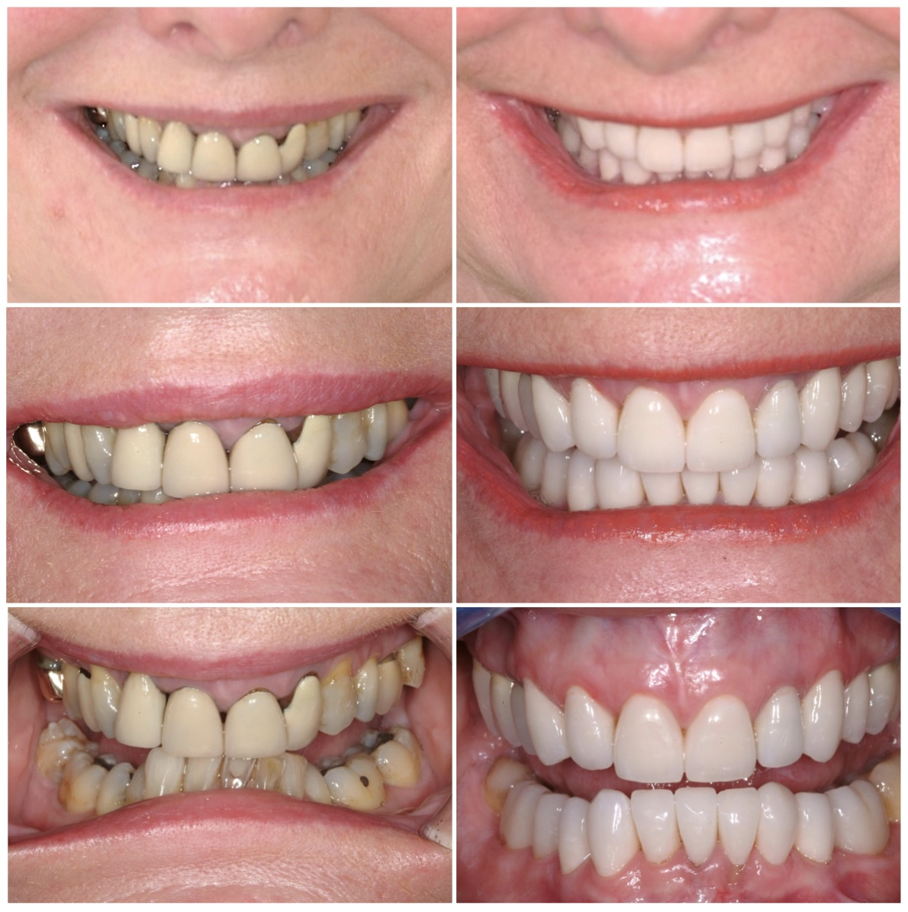
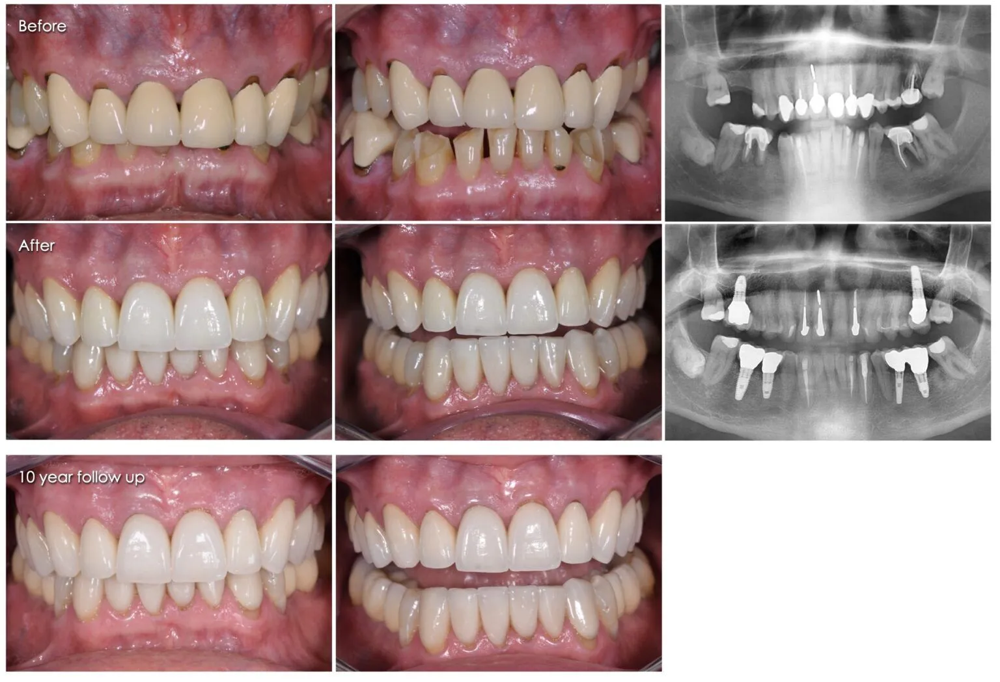
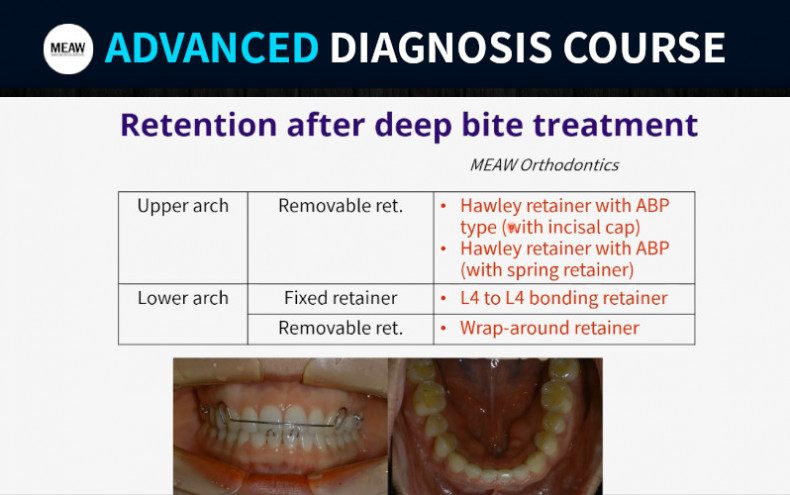

Deep Bite
Traumatic occlusion, or a misaligned bite, occurs when the teeth and jaws do not align properly. This condition is often genetic but can also result from factors such as crowded, worn, or decayed teeth, poor or failing dental work, and missing teeth—especially missing back teeth. Habits like thumb sucking, teeth clenching, and grinding (bruxism) can further contribute to the problem.
In adults, the absence of back teeth can worsen a deep bite, leading to a collapsed bite and lower facial structure, which creates a more aged appearance.
Among all bite disorders, a deep bite is the most damaging to both dental health and jaw joints. It affects facial aesthetics by reducing facial height, increasing wrinkle lines, and accelerating signs of aging due to excessive wear on the back teeth.
While often perceived as merely a cosmetic concern, a bad bite has serious implications. It can cause extensive damage to the teeth and gums and contribute to headaches and temporomandibular joint (TMJ) disorders.
A deep bite specifically occurs when the upper front teeth excessively overlap the lower front teeth, leading to potential oral health complications.
Why Treat Deep Bite?
Unlike other dental conditions that present immediate pain, traumatic occlusion and deep bite are silent, progressive disorders. Similar to chronic diseases like cancer, they develop gradually through a series of small, seemingly insignificant changes over time. Since the damage occurs slowly, it often goes unnoticed until it reaches an advanced stage. The first noticeable symptom is usually a sudden onset of generalized tooth sensitivity, which often appears only after significant and irreversible damage has already taken place.
Features of Deep Bite
In the initial stages, signs of a deep bite may include noticeable wear on the lower front teeth, appearing as surface flattening. Craze lines or thin fracture lines may develop in the front teeth, accompanied by plaque buildup and gum bleeding, particularly in the lower front region. As the upper teeth completely overlap the lower teeth, overall dental function declines, leading to difficulties in chewing food effectively.
If left untreated, the edges of the lower teeth will undergo early and extensive wear, sometimes affecting the upper teeth as well, leading to generalized sensitivity. Sudden chipping of teeth and frequent gum bleeding, especially while brushing, may also occur. Over time, the gum tissue behind the upper teeth and in front of the lower teeth can become damaged due to excessive pressure from the biting edges, resulting in gingival recession. This condition can also impact your smile, as wear on the upper teeth alters their chewing surfaces, and gum recession creates an unesthetic appearance. In severe cases, it may lead to the loss of front teeth. Additionally, bad breath may develop as a side effect of gum disease and plaque accumulation.
In the advanced stage, excessive wear on the teeth leads to generalized sensitivity and pain in severely affected teeth. Gingival recession becomes more pronounced, exposing the tooth roots and increasing the risk of further complications. Additionally, temporomandibular joint (TMJ) disorders may develop, causing pain in the jaw joints and muscles, often leading to discomfort while chewing, speaking, or even at rest.
Treatment of Deep Bite by Cosmetic Crown
A deep bite, even in adults, can now be effectively corrected using various advanced restorative treatment options.
The treatment focuses on restoring the correct bite by raising it with crowns on the back teeth and replacing any missing teeth to ensure equal distribution of chewing forces.
If the front teeth are already worn or chipped, metal-free crowns or dental laminates may be used to restore aesthetics and function. Additionally, a professional gum cleaning (scaling) may be recommended to maintain optimal oral health.
In advanced stages, when patients experience pain, generalized sensitivity, and gum recession (gum deterioration), comprehensive treatment is necessary. Along with placing crowns on the back teeth to restore the bite, teeth affected by severe pain may require root canal therapy. The front teeth, if significantly damaged, will also need crowns for protection and aesthetics. Additionally, gum surgery may be required in cases where gum recession is severe.
Cost of Treatment
The cost of treatment varies based on the quality of crowns chosen to restore the bite and the number of teeth involved in the process.
In the early stages, when no significant damage has occurred, a night guard (a protective template) may be provided as a preventive measure. While it does not treat the condition, it significantly slows its progression and helps prevent jaw joint (TMJ) and muscle pain.
If detected at a younger age, before significant tooth wear (attrition) has taken place, the condition can be corrected by repositioning the teeth into a stable, proper alignment using braces or an anterior bite plane, a treatment approach known as orthodontic correction.
FAQ's
Do I Still Have a Deep Bite If My Lower Teeth Don’t Touch My Upper Teeth?
Even if your lower teeth do not touch your upper teeth in a resting position, you may still have a deep bite. When you chew, your lower teeth can continuously strike the upper teeth, transferring excessive pressure from the teeth to the gums and, eventually, to the temporomandibular joint (TMJ). Over time, this can lead to discomfort, tooth wear, and jaw-related issues.
How Does a Deep Bite Cause TMJ Pain?
A deep bite places excessive and unnatural stress on the jaw muscles and temporomandibular joint (TMJ) over time. This continuous strain can lead to muscle soreness and joint pain, even during normal activities like chewing and speaking. The constant pressure on the TMJ can gradually damage the bones and cartilage, potentially resulting in long-term discomfort, restricted jaw movement, and other TMJ-related disorders.
Am I Supposed to Be Worried If I Have a Deep Bite?
Deep Bite is a common dental condition, but it can lead to serious complications if left untreated. While it's not an immediate cause for alarm, addressing it early is important to avoid more severe oral health issues. Seeking treatment from your dentist can help prevent further damage and correct the bite effectively.
Can Invisalign Treat a Deep Bite?
Yes, Invisalign clear aligners can be used to treat Deep Bite. These aligners help reposition the teeth to improve the bite and alleviate symptoms, offering a more discreet and comfortable alternative to traditional braces.
How Long Does It Take to Treat a Deep Bite?
Treatment duration varies based on the method:
Restorative treatment: Typically takes about a week.
Orthodontic treatment (such as braces or Invisalign): Usually takes about 10 to 14 months, depending on the severity of the deep bite and the patient's specific needs.
What is a Night Guard?
A night guard is a protective device worn over the teeth while sleeping. It is often used in the early stages of a deep bite or teeth grinding issues. While it doesn’t correct the bite itself, it helps prevent further damage and discomfort by reducing pressure on the teeth, jaw muscles, and TMJ, delaying the progression of the condition and preventing muscle pain.